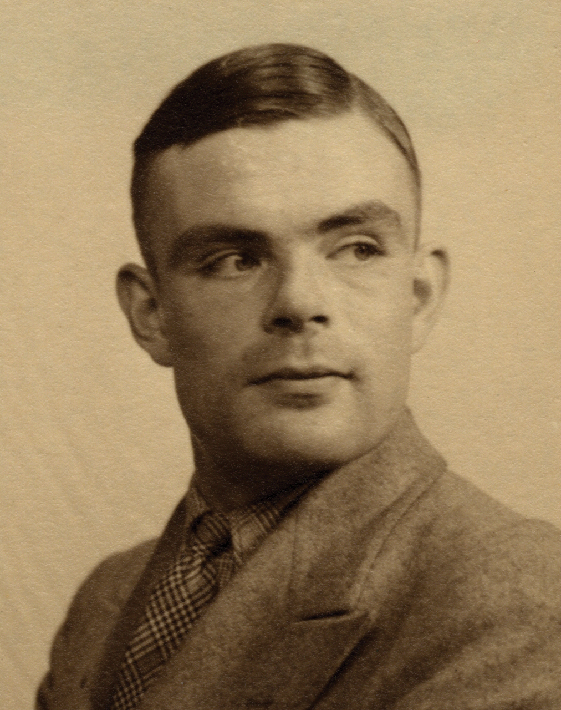
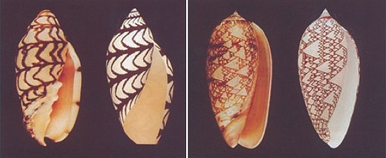
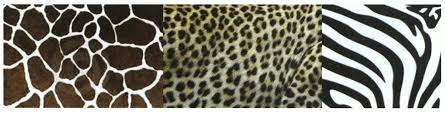
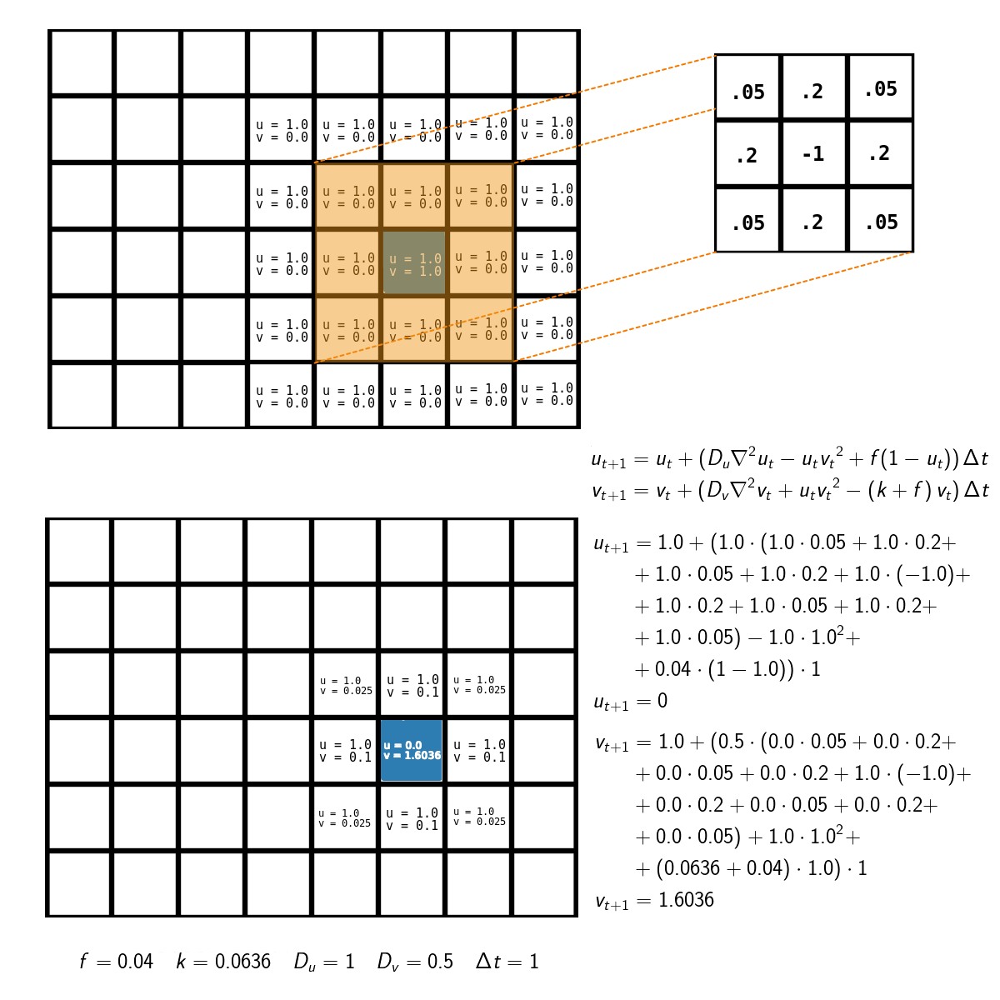

Reaction-Diffusion by the Gray-Scott model

Introduction
Reaction–diffusion systems are mathematical models which correspond to several physical phenomena. The most common is the change in space and time of the concentration of one or more chemical substances: local chemical reactions in which the substances are transformed into each other, and diffusion which causes the substances to spread out over a surface in space. Reaction–diffusion systems are naturally applied in chemistry. However, the system can also describe dynamical processes of non-chemical nature. Examples are found in biology, geology and physics (neutron diffusion theory) and ecology. Mathematically, reaction–diffusion systems take the form of semi-linear parabolic partial differential equations in general:
\[ \frac{\partial \mathbf{u}}{\partial t} = \mathbf{D} \nabla^2\mathbf{u}+\mathbf{R}(\mathbf{u})\] where \(\mathbf{u = u}(\mathbf{r,t})\) is a vector of concentration variables, \( \mathbf{R}(\mathbf{u})\) denotes a local reaction kinetics and \( \nabla^2 \) is a Laplace operator. \( \mathbf{D} \) denotes a diagonal diffusion coefficient matrix.
First mentioned
"The Chemical Basis of Morphogenesis" is an article that the English mathematician Alan Turing wrote in 1952. It describes how patterns in nature, such as stripes and spirals, can arise naturally from a homogeneous, uniform state. The theory, which can be called a reaction–diffusion theory of morphogenesis, has become a basic model in theoretical biology. Such patterns have come to be known as Turing patterns. For example, it has been postulated that the protein VEGFC can form Turing patterns to govern the formation of lymphatic vessels in the zebrafish embryo.
Alan Turing
Alan Turing, in full Alan Mathison Turing, (born June 23, 1912, London, England—died June 7, 1954, Wilmslow, Cheshire), British mathematician and logician who made major contributions to mathematics, cryptanalysis, logic, philosophy, and mathematical biology and also to the new areas later named computer science, cognitive science, artificial intelligence, and artificial life. tu by trebalo dzabnut jeho fotku
Proving the theory
For three decades, Turing’s theory on morphogenesis was largely ignored by biologists. But the combined arrival of powerful computers and the dawn of modern molecular cell biology, as well as the work of two generations of scientists who took Turing’s theory seriously from the 80s onwards, have contributed to proving it. Jeremy Green, professor of developmental biology at King’s College London, and his team provided one of the first non-theoretical proofs of Turing’s ideas in 2014, when they discovered that the ridges on the roof of a mouse’s mouth acted like stripes or spots in morphogenesis. They identified the two chemicals needed to produce this – and proved in mice that it works. ‘It’s been possible, but only in very recent times, to really test Turing’s theory,’ Professor Green says. ‘There are a relatively limited number of examples where people have done that in a rigorous way – skin being one, my research into the palate being another, and left-right asymmetry in fish being the third. Turing was right and we’ve now got the names [for the shape-formers].’ Broadly speaking, the morphogens in this case turned out to be protein growth factors, of which there are six main ones. ‘Each one of those six can come in a bunch of different flavours,’ says Green – so determining what the job of each morphogen is will be critical, as scientists come to programme stem cells to do certain things in the body. It might be counterintuitive to many of us, but it makes sense that a mathematician would look at patterns in biology and try to formulate an equation for their existence. It’s only now that scientists are realising quite how far ahead Turing’s thinking was.
Turing paterns in nature


We can find many examples of Turing patterns. Tigers, fishes and many others.
Use in modern world
Aided by modern computers, scientists have shown that Turing’s equations can be used to mimic countless two-dimensional patterns seen across the natural world
Fingerprints - articleFingerprints represent a particular characteristic for each individual. Characteristic patterns are also formed on the palms of the hands and soles of the feet. Their origin and development is still unknown but it is believed to have a strong genetic component, although it is not the only thing determining its formation. Each fingerprint is a papillary drawing composed by papillae and rete ridges (crests). This paper proposes a phenomenological model describing fingerprint pattern formation using reaction diffusion equations with Turing space parameters.
 Coats of animals - article
Coats of animals - article
Turing began with the assumption that morphogens can react with one another and diffuse through cells. He then employed a mathematical model to show that if morphogens react and diffuse in an appropriate way, spatial patterns of morphogen concentrations can arise from an initial uniform distribution in an assemblage of cells. Turing's model has spawned an entire class of models that are now referred to as reaction-diffusion models. These models are applicable if the scale of the pattern is large compared with the diameter of an individual cell. The models are applicable to the leopard's coat, for instance, because the number of cells in a leopard spot at the time the pattern is laid down is probably on the order of 100.
Gray-Scott model
The reaction-diffusion system described here involves two generic chemical species U and V, whose concentration
at a given point in space is referred to by variables u and v. As the term implies, they react with each other,
and they diffuse through the medium. Therefore the concentration of U and V at any given location changes with
time and can differ from that at other locations.
There are two reactions which occur at different rates throughout the space according to the relative
concentrations at each point:
\[ U + 2V \rightarrow 3V \]
\[ V \rightarrow P \]
P is an inert product. It is assumed for simplicity that the reverse reactions do not occur (this is a useful
simplification when a constant supply of reagents prevents the attainment of equilibrium). Because V appears on
both sides of the first reaction, it acts as a catalyst for its own production.
The overall behavior of the system is described by the following formula, two equations which describe three
sources of increase and decrease for each of the two chemicals:
\[ \frac{\partial u}{\partial t} = D_u \nabla^2u-uv^2+f(1-u)\]
\[ \frac{\partial v}{\partial t} = D_v \nabla^2v+uv^2-(f+k)v\]
u=[U], the concentration of U, and v=[V]. For the sake of simplicity we can consider Du, Dv, f and k to be
constant coefficients.
The first equation tells how quickly the quantity u increases. There are three terms. The first term, Du∇2u, is
the diffusion term. It specifies that u will increase in proportion to the Laplacian (a sort of multidimensional
second derivative giving the amount of local variation in the gradient) of U. When the quantity of U is higher
in neighboring areas, u will increase. ∇2u will be negative when the surrounding regions have lower
concentrations of U, and in such cases the diffusion term is negative and u decreases. If we made an equation
for u with only the first term, we would have ∂u/∂t = Du∇2u, which is a diffusion-only system equivalent to the
heat equation.
The second term is -uv2. This is the reaction rate. The first reaction shown above requires one U and two V;
such a reaction takes place at a rate proportional to the concentration of U times the square of the
concentration of V6. Also, it converts U into V: the increase in v is equal to the decrease in u (as shown by
the positive uv2 in the second equation). There is no constant on the reaction terms, but the relative strength
of the other terms can be adjusted through the constants Du, Dv, F and k, and the choice of the arbitrary time
unit implicit in ∂t.
The third term, F(1-u), is the replenishment term. Since the reaction uses up U and generates V, all of the
chemical U will eventually get used up unless there is a way to replenish it. The replenishment term says that u
will be increased at a rate proportional to the difference between its current level and 1. As a result, even if
the other two terms had no effect, 1 would be the maximum value for u. The constant F is the feed rate and
represents the rate of replenishment.
In the systems this equation is modeling, the area where the reaction occurs is physically adjacent to a large
supply of U and separated by something that limits its flow, such as a semi-permeable membrane; replenishment
takes place via diffusion across the membrane, at a rate proportional to the concentration difference Δ[U]
across the membrane. The value 1 represents the concentration of U in this supply area, and F corresponds to the
permeability of the membrane.
It is useful to note here that in biological systems, such as the skin of a developing embryo, this "supply"
could be from the bloodstream, or from cells in an adjacent layer of tissue that continuously generate the
needed chemical(s), with rates regulated by enzymes.
Comparing the two equations, the biggest difference is in the third term, where we have F(1-u) in one equation
and (F+k)v in the other. The third term in the v equation is the diminishment term. Without the diminishment
term, the concentration of V could increase without limit. In practice, V could be allowed to accumulate for a
long time without interfering with further production of more V, but it naturally diffuses out of the system
through the same (or a similar) process as that which introduces the new supply of U. The diminishment term is
proportional to the concentration of V that is currently present, and also to the sum of two constants F and k.
F, as above, represents the permeability of the membrane to U, and k represents the difference between this rate
and that for V.
Solving method
We are going to obtain diffusion by Laplace function. Renew values according to the previous values, this dynamical system shown by using forward Euler integrations of the finite-difference equations.
Forward Euler method: \[ \frac{\partial x}{\partial t} = f(x,t), \quad \quad x(t=0) = x_0 \] \[ x_{t+1} = x_t + f_t \Delta t \]
Finite-difference equations of Gray Scott model:
\[u_{t+1} = u_t + (D_{u}\nabla^2{u_t} - u_t{v_t}^2 + f(1-u_t))\,\Delta t \] \[v_{t+1} = v_t + (D_{v}\nabla^2{v_t} + u_t{v_t}^2 - (k+f)\,v_t)\,\Delta t \]
To obtain Laplace function we are using approximation by convolution with 3x3 mask.Example
We assume that values used in this example are: \[D_A=1.0, \quad D_B = 0.5, \quad f = 0.055, \quad k = 0.062, \quad \Delta t = 1 \] Convolution mask is \begin{matrix}0.05 & 0.2 & 0.05 \\ 0.2 & -1 & 0.2 \\ 0.05 & 0.2 & 0.05 \end{matrix}
